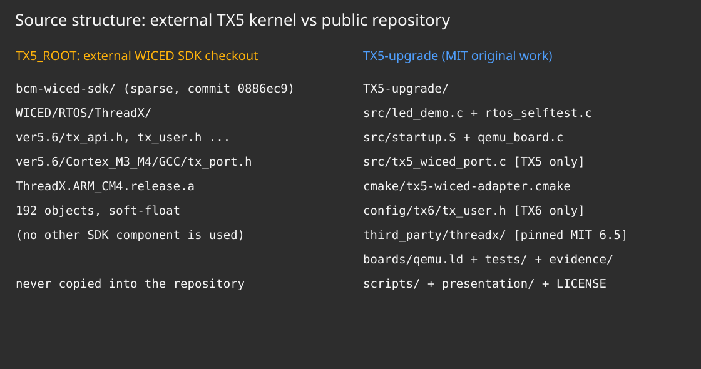
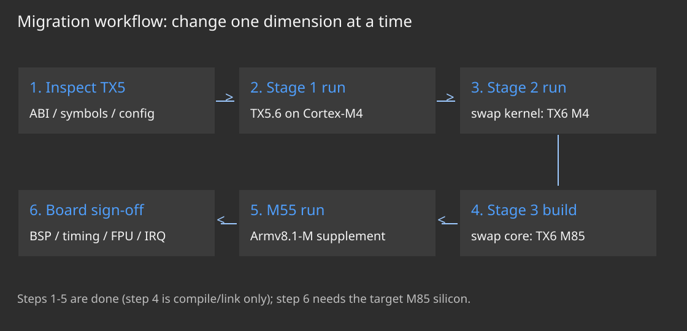
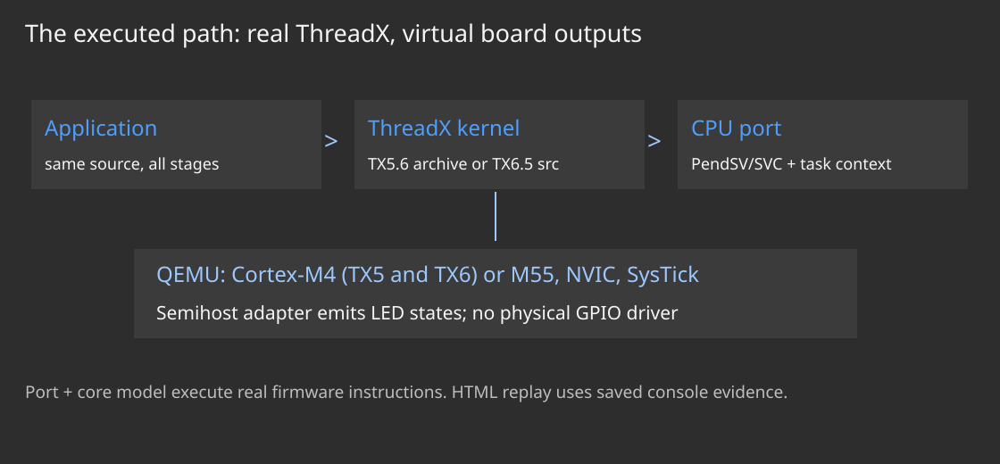
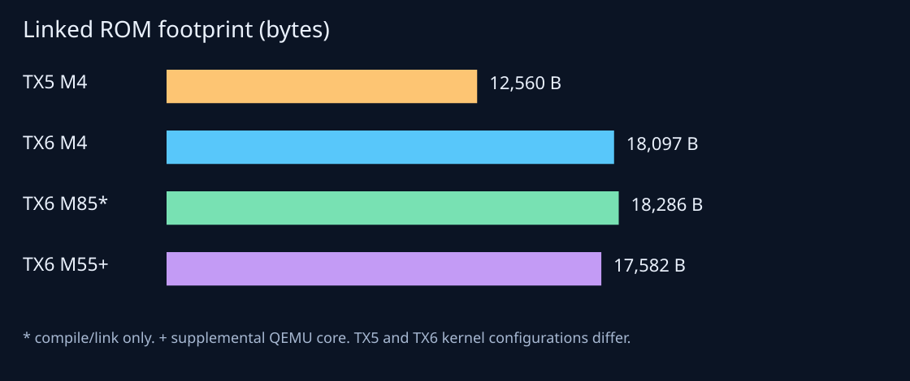
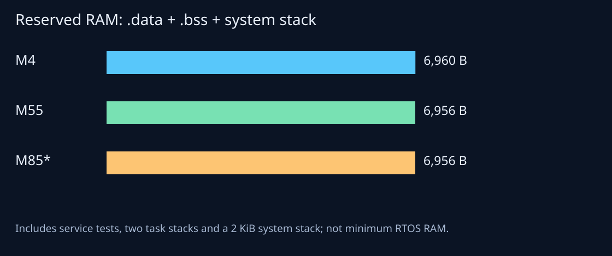
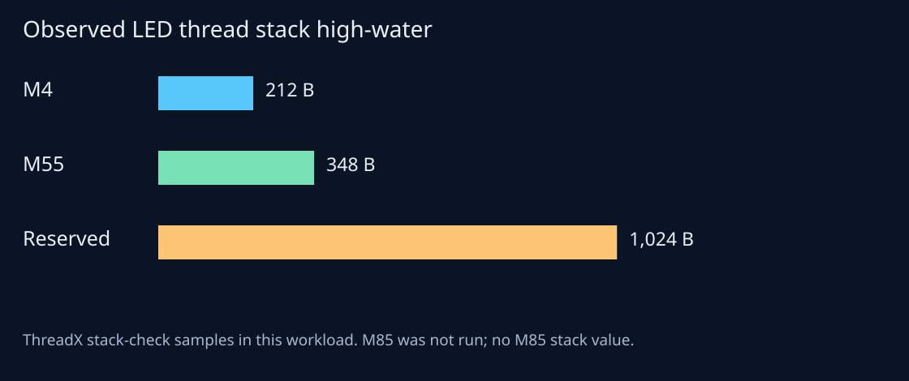
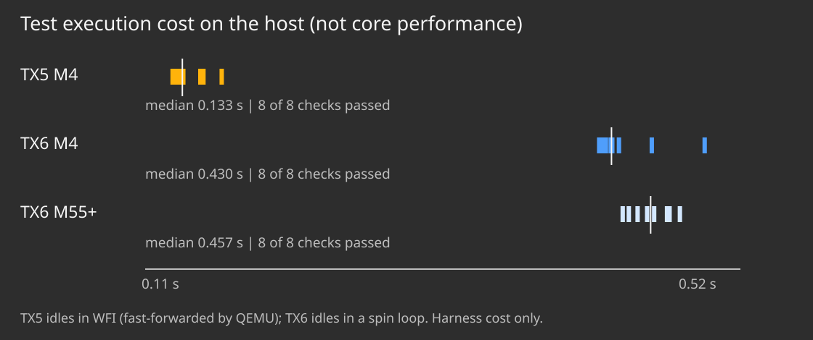
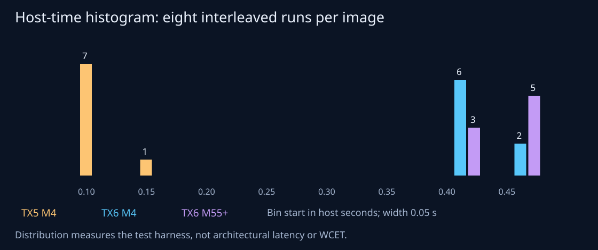
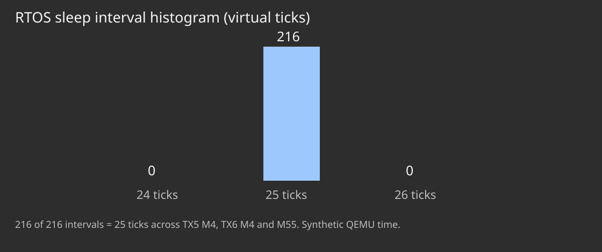

ThreadX 5.6 → current 6.x
Cortex-M4 → modern Cortex-M, with executable evidence
A reproducible Clang + QEMU proof, not a promise of a full WICED board conversion.
| Target | Evidence achieved |
|---|---|
| Cortex-M4 / ThreadX 6 | Compiled, linked, executed: 8/8 repeated runs |
| Cortex-M55 / ThreadX 6 | Compiled, linked, executed: 8/8 repeated runs |
| Cortex-M85 / ThreadX 6 | Compiled and linked only; no M85 runtime claim |
ThreadX 5 and 6: what actually changes
Same RTOS service concepts, different source / port / licensing baseline
| Concern | WICED ThreadX 5.6 | Current Eclipse ThreadX 6.x |
|---|---|---|
| Kernel delivery | CM3/CM4 prebuilt archives; headers | Public common C source + CPU/toolchain ports |
| Scheduling / services | Threads, priority scheduling, queues, semaphores | Same service families; retest semantics and configuration |
| Architecture | SDK contains a Cortex-M3/M4 port | Pinned release contains M4, M55 and M85 ports |
| Rights in this SDK | WICED-only RTOS binary terms | Current selected release has MIT license |
| Integration | Vendor SDK and old GNU build | Rebuilt source, matching ABI, Clang + CMake |
Why choose current 6.x for this project?
Remove the opaque binary / port dependency before changing the core
- We need source we can rebuild for the target ABI and freely share.
- The selected current release includes an upstream Cortex-M85 port.
- A pinned open source baseline enables review, regression tests and reproducible build evidence.
- Later 6.x versions include fixes and port updates; audit relevant release notes, do not freeze at the linked 2022 tag.
- An old licensed TX5 kernel could theoretically be custom-ported. That is different scope, risk and rights.
The exact version, not a moving branch
The linked 6.1.12 release is not the latest release
| Input | Finding / decision |
|---|---|
| WICED reference | SDK 3.1.0; ThreadX ver5.6; commit 0886ec932a063e12db768cd09428e8a8ab555bce |
| User's ThreadX link | v6.1.12_rel, 2022-era Azure RTOS release |
| Selected new baseline | v6.5.2.202603_rel, observed latest on 2026-10-11 |
| Pinned source commit | 93387b0a60382a29579bbad5045c68328e3751df |
| License | Current selected release: MIT; preserve upstream notices |
Do not swap in the older tag while assuming its checked-in license text is the same. The old tag contains hardware-linked Azure RTOS licensing language.
git submodule update --init --recursive
git -C third_party/threadx rev-parse HEADCortex-M4, M55 and M85
Keep CPU architecture distinct from a particular microcontroller
| Property | Cortex-M4 | Cortex-M55 | Cortex-M85 |
|---|---|---|---|
| Architecture | Armv7E-M | Armv8.1-M | Armv8.1-M |
| DSP / vectors | Scalar DSP extensions | Helium / MVE | Helium / MVE |
| Floating point | Optional single precision | Configuration-dependent FP/MVE | Configuration-dependent FP/MVE |
| Security model | No Armv8-M TrustZone | Armv8-M TrustZone | TrustZone; PACBTI capability/configuration |
| This proof | QEMU MPS2 AN386 run | QEMU MPS3 AN547 run | Compile/link only |
Compatibility stops at the hardware boundary
Portable C is only one layer of an RTOS migration
- Recompile all RTOS-facing code and control blocks; never relink a CM4 binary on the strength of API names.
- Match CPU, Thumb ISA, float ABI, kernel flags and stack alignment across every translation unit.
- Verify exception return, PSP/MSP context, IRQ priorities and SysTick routing.
- Plan the SoC linker map, VTOR, caches/TCM, MPU, TrustZone and DMA coherency separately.
- Test FPU/MVE task switching and security state on real M85 hardware before claiming those paths.
-mcpu=cortex-m4 # same-release control build
-mcpu=cortex-m55 # executable QEMU proof
-mcpu=cortex-m85 # compile/link proof only
# common: --target=arm-none-eabi -mthumb -mfloat-abi=hardThe most modern runnable QEMU Cortex-M here
Probe the installed executable instead of relying on development docs
qemu-system-arm --version
qemu-system-arm -machine help
qemu-system-arm -cpu help
# installed: 11.1.0
# present: mps3-an547 / cortex-m55
# absent: mps3-an555 / cortex-m85M55 is the newest Cortex-M CPU exposed by this installed QEMU build. QEMU development documentation mentions AN555, but it is not available in the tested binary.
Licensing is an engineering input
Public GitHub visibility does not imply permission to redistribute
- The supplied GPIO .c and .mk files explicitly carry proprietary Broadcom notices.
- The SDK README says its ThreadX / NetX objects are free for WICED use only.
- No proprietary GPIO file, TX5 archive, Wi-Fi firmware or restricted vendor stack is included.
- The new demo is independently written to preserve the LED/button behavior.
- Original work uses MIT; the pinned ThreadX source retains its upstream MIT license.
- PDF typography embeds open-source Roboto fonts under OFL 1.1, with notices shipped beside the PDF.
- Clang and QEMU are external tools, not firmware components relicensed as MIT.
The source trees tell the migration story
Remove a binary dependency; preserve a narrow behavioral contract

Upgrade in separate dimensions
Avoid attributing an OS change to a CPU change

The TX5 reference is a behavior/source-inventory baseline, not a runnable benchmark baseline. Separating the dimensions makes the remaining hardware work visible.
What really executes
No mock RTOS, no fake emulator success

Diff 1: RTOS delivery and build
A conceptual integration diff, not copied proprietary SDK code
- RTOS input: opaque ThreadX.ARM_CM4.release.a
- Toolchain: vendor SDK make + legacy GNU assumptions
+ RTOS input: pinned third_party/threadx/common + selected CPU port
+ add_subdirectory(third_party/threadx)
+ target_link_libraries(threadx_gpio_demo PRIVATE threadx)
+ Clang C + integrated assembler + LLD
+ --target=arm-none-eabi -mcpu=<selected core>Source rebuild avoids mixing TX5 headers with TX6 object layouts. Kernel configuration comes from a single tx_user.h shared by the library and application.
Diff 2: task lifecycle is explicit
Initialize static objects before allowing the scheduler to run
- application behavior entered through vendor SDK startup
+ int main(void) { tx_kernel_enter(); /* never returns */ }
+ void tx_application_define(void *unused) {
+ tx_thread_create(&led_thread, "gpio-led-demo",
+ led_thread_entry, 0, led_thread_stack,
+ sizeof led_thread_stack, 5, 5,
+ TX_NO_TIME_SLICE, TX_AUTO_START);
+ }- Lower numeric priority is higher priority in ThreadX.
- Stack storage is static and aligned as ULONG; lifetime exceeds the task.
- Application and RTOS objects are freshly compiled, not ABI-reused.
Diff 3: milliseconds versus RTOS ticks
Keep units visible; avoid a silent tenfold or hundredfold delay error
- delay API accepts 250 milliseconds
+ #define TX_TIMER_TICKS_PER_SECOND 100
+ #define LED_UPDATE_TICKS 25U
+ tx_thread_sleep(LED_UPDATE_TICKS); // 250 ms virtual time
+ SysTick reload = DEMO_CLOCK_HZ / 100 - 1
+ SysTick_Handler -> _tx_timer_interruptThe tested board clock constants are 25 MHz for MPS2-M4 and 32 MHz for MPS3-M55. The M85 build reuses the demonstration map/clock; a real M85 SoC must replace them.
Diff 4: preserve the held-button latch
A subtle behavioral detail, checked at release as well as press
- toggle the same boolean even while the button is held
+ if (!button0) toggle0 = !toggle0;
+ output0 = button0 || toggle0;
+ qemu_led_set(0, output0);
# cycle 1: latch OFF / output OFF
# cycles 2-3: latch unchanged / held button forces ON
# cycle 4: button released / next toggle yields ONThe reference behavior pauses the toggle latch while the button is held. An implementation that merely sets the latch true while held changes the release behavior.
Diff 5: startup assembly under Clang
A real encountered failure, with a trace-supported fix
- sub r2, r2, r1 // Clang emitted sub.w, without updating flags
- beq copy_done // branches on stale flags
- sub r2, r2, #1 // same hidden flag dependency
- bne copy_loop // loop fails to terminate
+ copy_loop:
+ cmp r1, r2 // explicit end-pointer comparison
+ bhs copy_done
+ ldrb r3, [r0], #1
+ strb r3, [r1], #1
+ b copy_loopQEMU traced a precise bus fault at 0x00080000 during the endless startup copy. The replacement has explicit comparisons, copies .data, clears .bss, and enables CP10/CP11.
Diff 6: one security mode and one ABI
Scope down the first proof; make omitted features explicit
+ // include/tx_user.h: compiled into kernel AND application
+ #define TX_SINGLE_MODE_SECURE
+ #define TX_TIMER_TICKS_PER_SECOND 100
+ #define TX_ENABLE_STACK_CHECKING
+ // no secure/non-secure task transitions in this demo
+ // use hard-float ABI consistently; enable CP10/CP11 at reset- Single-secure avoids falsely exercising secure-stack allocation paths without a non-secure image.
- Hard-float compile/link is established; dedicated mixed FPU/MVE context stress remains pending.
- SVC is unused in this configuration; PendSV handles context switching.
- Do not infer a TrustZone security policy from a successful boot.
Diff 7: IRQ, vectors and memory belong to the BSP
Minimal executable map now; production SoC map later
+ .vectors: initial MSP, Reset, faults, PendSV, SysTick
+ VTOR = address of demo_vectors
+ PendSV priority = 0xff; SysTick priority = 0x40
+ CODE: 0x00000000, 512 KiB
+ RAM: 0x20000000, 32 KiB
+ system stack: 2048 bytes, 8-byte aligned
+ linker ASSERT: reserved RAM must fitDiff 8: success becomes a checked contract
Fail on missing, wrong or partial output
- visually inspect a blinking LED and assume migration works
+ verify CPUID part number and RTOS version
+ require queue / event / semaphore / mutex / pool self-test PASS
+ check all 10 button + LED rows
+ require 9 intervals of exactly 25 virtual ticks
+ require explicit completion and QEMU exit status 0
+ reject timeout, wrong identity, wrong state or partial logOne positive verifier fixture plus ten deliberately corrupted fixtures pass their expected assertions. The firmware's real run is tested separately through CTest.
The RTOS services really switch tasks
A higher-priority worker must suspend, resume and signal
// LED task priority 5; worker priority 4
worker: tx_queue_receive(&queue, &value, TX_WAIT_FOREVER);
assert(value == 0x1234);
tx_event_flags_set(&flags, 1, TX_OR);
LED: tx_queue_send(&queue, &message, TX_NO_WAIT);
tx_event_flags_get(&flags, 1, TX_OR_CLEAR,
&actual, TX_NO_WAIT);
// observed: worker_thread_runs = 2; led_thread_runs = 12- Worker creation preempts the LED task; an empty queue suspends the worker.
- Sending the payload resumes the worker; the event proves execution reached the receiver.
- The timer wakes the sleeping LED task nine times through the real ThreadX timer path.
- Mutex and pool checks are basic operations, not exhaustive contention/fragmentation stress.
Replay the verified LED run
Recorded QEMU evidence, not a browser-side ARM emulator
Two buttons are scripted active-low inputs. Buttons force their paired LED on while held; the paused toggle resumes after release. Step through cycles 0–9.
A visible runtime result
Cortex-M55 console evidence from the final measured image
[boot] ThreadX GPIO behavior demo; LED output is semihosted
[core] cortex-m55
[metric] cpuid=1091555873
(c) 2024 Microsoft Corp. (c) 2026-present Eclipse ThreadX contributors. * ThreadX Cortex-M55/GNU Version 6.5.2.202603 *
[metric] sizeof_TX_THREAD=180
[metric] led_stack_reserved=1024
[metric] worker_thread_runs=2
[selftest] queue/preemption/events/semaphore/mutex/byte-pool PASS
cycle=0 BTN0=released BTN1=released LED0=ON LED1=ON tick=0
cycle=1 BTN0=released BTN1=released LED0=OFF LED1=OFF tick=25
cycle=2 BTN0=PRESSED BTN1=released LED0=ON LED1=ON tick=50
cycle=3 BTN0=PRESSED BTN1=released LED0=ON LED1=OFF tick=75
cycle=4 BTN0=released BTN1=released LED0=ON LED1=ON tick=100
cycle=5 BTN0=released BTN1=PRESSED LED0=OFF LED1=ON tick=125
cycle=6 BTN0=released BTN1=released LED0=ON LED1=OFF tick=150
cycle=7 BTN0=released BTN1=released LED0=OFF LED1=ON tick=175
cycle=8 BTN0=released BTN1=released LED0=ON LED1=OFF tick=200
cycle=9 BTN0=released BTN1=released LED0=OFF LED1=ON tick=225
[metric] led_thread_runs=12
[metric] led_stack_high_water_bytes=348
[pass] bounded LED sequence completedMemory chart: linked ROM
Clang -O3; same RTOS release, same app and service tests

M4: 17,779 B; M55: 17,348 B; M85 compile-only: 18,048 B.
Memory chart: reserved RAM
Include stacks and test infrastructure, not only global data

The M4 and M55 runtime report sizeof(TX_THREAD) = 180 bytes in this build configuration. That observation is not permission to treat every TX5 or differently configured TCB as ABI-compatible.
Stack headroom is measured, not assumed
Useful early evidence; not production stack qualification

Performance chart: emulator test cost
Measure what was actually run, and state what the number means

Histogram: repeatability of the host harness
Samples are retained, not reduced to an unexplained mean

Use this to budget an automated test job and spot test-host variability. Do not turn the median difference into a CPU performance claim.
Histogram: scheduler timing contract
144 measured intervals, all at the requested 25 ticks

What the M85 build proves
Correct target attributes and resolved symbols, not execution
llvm-readelf -A build/m85/threadx_gpio_demo.elf
CPU_name: cortex-m85
CPU_arch: ARM v8.1-M Mainline
ABI_VFP_args: AAPCS VFP
MVE_arch: MVE integer and float
llvm-nm --undefined-only build/m85/threadx_gpio_demo.elf
# no undefined symbolsThis establishes that Clang compiled and LLD linked the application with the M85 port. The demo linker/clock are not a production M85 SoC definition.
The hardware acceptance gate
Turn this PoC into a product migration with explicit tests
| Workstream | Required evidence before production |
|---|---|
| Board / SoC | Vendor-approved startup, linker map, GPIO polarity, clock tree, IRQ map |
| Context / ABI | Stress preemption + nested IRQ + mixed scalar/FPU/MVE tasks; inspect saved context |
| Security | TrustZone policy, secure gateways/stacks, MPU and optional PACBTI configuration |
| Performance | On-silicon cycles, IRQ latency distribution, deadline/WCET, throughput and energy |
| Application | Regression suite for peripheral, network, watchdog and low-power interactions |
| Governance | Licensing, SBOM, safety/change-impact assessment, traceable requirements |
Reproduce the result
Public source, pinned dependency, raw evidence and automated checks
git clone --recurse-submodules https://github.com/zuwasi/TX5-upgrade.git
cd TX5-upgrade
cmake --preset m4 && cmake --build --preset m4
cmake --preset m55 && cmake --build --preset m55
cmake --preset m85 && cmake --build --preset m85
ctest --test-dir build/m4 --output-on-failure
ctest --test-dir build/m55 --output-on-failure
python -m unittest discover -s tests -p test_verifier.py -v
python scripts/collect_evidence.py --repeats 8The GitHub workflow uses a Linux package toolchain, so CI tool versions may differ from the recorded Windows Clang 22.1.3 / QEMU 11.1.0 measurements. Local evidence lists exact versions.
The technical conclusion
A bounded yes, backed by executable evidence
- YES: the legacy GPIO behavior is implementable on current MIT ThreadX.
- YES: the same application and service tests execute on M4 and modern M55 QEMU targets.
- YES: Clang compiles and links the same application using the upstream Cortex-M85 port.
- NOT YET: M85 runtime and real-board BSP / timing / security qualification.
- NEXT: choose the actual M85 SoC and run the hardware acceptance suite.
Public source: github.com/zuwasi/TX5-upgrade
Presentation: zuwasi.github.io/Public-html-pages/tx5-upgrade/
Sources and evidence trail
Primary references and local measured artifacts